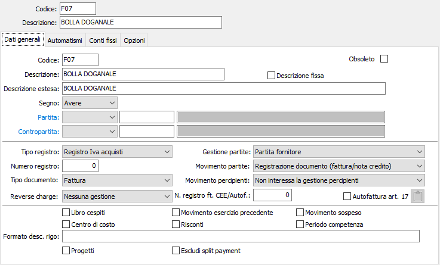
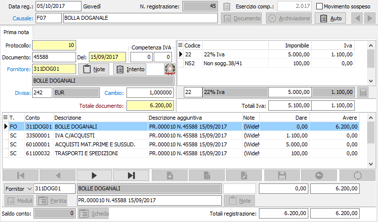

Registrazione di bolla doganale

Le bolle doganali relative ad acquisti extracomunitari devono essere registrate ai soli fini Iva acquisti. Poiché in ogni caso sul registro Iva acquisiti deve comparire la ragione sociale del fornitore, si avrà cura di creare preliminarmente un fornitore fittizio denominato Bolle Doganali oppure Dogana di XYZ. Il codice di questo fornitore fittizio deve anche essere inserito nella tabella Codici di conto fissi della configurazione applicativo di contabilità.
La causale di contabilità Bolla doganale da utilizzare non deve contenere flag di gestione delle partite aperte, e come contropartita dovrà contenere lo stesso codice di fornitore fittizio Bolle Doganali o Dogana di XYZ. Non è infatti necessario imputare come costo l'imponibile accertato dalla Dogana, perché l'effettivo costo delle merci importate è già stato imputato all'atto della registrazione della fattura del fornitore extracomunitario.
Questa metodica consentirà di ottenere una scrittura contabile in cui il sottoconto Bolla doganale storna parzialmente se stesso, rimanendo aperto per il solo importo Iva e l'eventuale dazio che verrà chiuso con la registrazione della fattura dello spedizioniere (contropartita degli importi in art. 15).
La causale non deve gestire le partite aperte perché non esiste nessun debito verso la dogana. Il debito per l'Iva e per gli eventuali importi di dazio risulteranno conglobati nel debito verso lo spedizioniere.
Richiamando la causale, appare l'abituale sezione video per la registrazione delle fatture di acquisto:

Nella sezione video Iva, dopo aver impostato il codice fornitore Bolla doganale e gli estremi del documento, bypassare il campo Totale documento senza impostare alcunché; impostare l'aliquota Iva rilevata dal documento e l'imponibile accertato dalla dogana, accertandosi che l'Iva calcolata corrisponda a quella indicata sul documento; se sono stati addebitati dazi, impostare un codice Iva adeguato e nel campo imponibile l'importo del dazio, assoggettando anche quest'ultimo ad Iva se si rileva tale trattamento nella bolla doganale. In ogni caso, non avendo impostato il totale documento per passare alla sezione contabilità occorre premere pagina giù.
Nella sezione contabilità, sul primo rigo compare in avere del fornitore Bolla doganale l'ammontare lordo fittizio della bolla doganale; nel secondo rigo, in dare di Iva acquisti, l'importo Iva accertato dalla dogana; nel terzo rigo nuovamente il fornitore Bolla doganale in dare per l'importo dell'imponibile accertato dalla Dogana più l'eventuale importo di dazio.
Se non sono stati addebitati dazi, la registrazione è conclusa e può essere salvata.
Se invece sono stati addebitati dazi, l'importo del terzo rigo (fornitore Bolla doganale) dovrà essere modificato per contenere esclusivamente l'imponibile accertato dalla Dogana e l'utente dovrà registrare in dare del quarto rigo l'importo dei dazi doganali imputandolo ad un apposito sottoconto di costo oppure direttamente a Merci c/ acquisti.
Al termine di questa estemporanea registrazione, necessaria per l'obbligo di registrazione della bolla doganale sul registro Iva acquisti e in contabilità del solo credito per Iva e dell'eventuale costo dei dazi doganali, il fornitore Bolla Doganale resterà aperto per l'ammontare dell'Iva acquisti e dell'eventuale dazio doganale.
Tale saldo verrà chiuso al momento della registrazione della fattura dello spedizioniere: infatti il saldo corrisponde all'importo anticipato alla dogana dallo spedizioniere ed esposto nella sua fattura come anticipazione art. 15; nella sezione contabilità della registrazione della fattura dello spedizioniere questo importo verrà imputato in dare al sottoconto Bolla Doganale, portando in tal modo il saldo a zero.